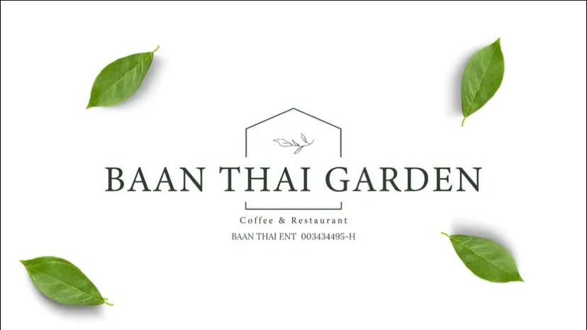

𝖇𝖆𝖆𝖓 𝖙𝖍𝖆𝖎 𝖌𝖆𝖗𝖉𝖊𝖓

Baan Thai Garden is a hidden gem in Lubok Jong, Pasir Mas, Kelantan, offering a unique and authentic Thai dining experience. Renowned for its creative take on traditional Thai cuisine, the restaurant combines rich flavors with a tranquil, garden-like atmosphere that immediately transports you to a serene oasis. Whether you are visiting with family, catching up with friends, or looking for a romantic dinner spot, Baan Thai Garden provides the perfect setting for all occasions.